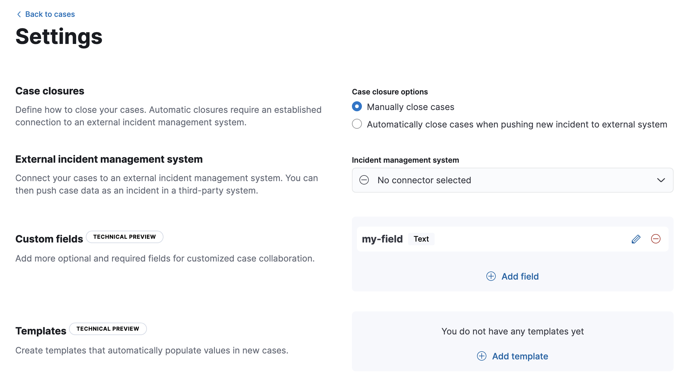
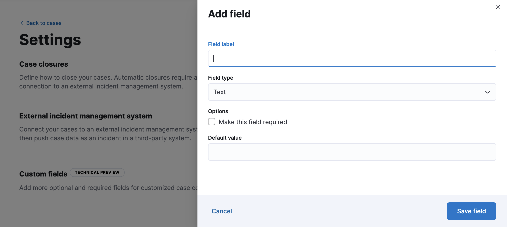

Open and manage new cases
editOpen and manage new casesedit
To perform these tasks, you must have full access to the Observability case feature in Kibana.
Open a new caseedit
Open a new case to keep track of issues and share the details with colleagues.
- Go to Cases → Create new case.
- [preview] This functionality is in technical preview and may be changed or removed in a future release. Elastic will work to fix any issues, but features in technical preview are not subject to the support SLA of official GA features. If you defined templates, optionally select one to use its default field values.
-
Give the case a name, severity, and description.
In the
Descriptionarea, you can use Markdown syntax to create formatted text. - Optionally, add a category, assignees, and tags. You can add users only if they meet the necessary prerequisites.
- [preview] This functionality is in technical preview and may be changed or removed in a future release. Elastic will work to fix any issues, but features in technical preview are not subject to the support SLA of official GA features. If you defined custom fields, they appear in the Additional fields section.
-
Under External incident management system, select a connector. If
you’ve previously added one, that connector displays as the default selection. Otherwise, the
default setting is
No connector selected. - After you’ve completed all of the required fields, click Create case.
Add custom fieldsedit
This functionality is in technical preview and may be changed or removed in a future release. Elastic will work to fix any issues, but features in technical preview are not subject to the support SLA of official GA features.
You can add optional and required fields for customized case collaboration.
-
Go to Cases → Settings.
 -
In the Custom fields section, click Add field.
 - Enter a field label.
- Choose a field type: text or toggle.
- If you want the text field to be mandatory in all cases, select Make this field required.
- Optionally add a default value.
- Click Save field.
You can subsequently remove or edit custom fields on the Settings page.
After you create custom fields, they’re added to all new and existing cases.
Existing cases have null values for the new text fields until you set them in each case.
Add email notificationsedit
You can configure email notifications that occur when users are assigned to cases.
For hosted Kibana on Elasticsearch Service:
-
Add the email domains to the notifications domain allowlist.
You do not need to take any more steps to configure an email connector or update Kibana user settings, since the preconfigured Elastic-Cloud-SMTP connector is used by default.
For self-managed Kibana:
-
Create a preconfigured email connector.
At this time, email notifications support only preconfigured email connectors, which are defined in the
kibana.ymlfile. -
Set the
notifications.connectors.default.emailKibana setting to the name of your email connector. - If you want the email notifications to contain links back to the case, you must configure the server.publicBaseUrl setting.
When you subsequently add assignees to cases, they receive an email.
Add filesedit
After you create a case, you can upload and manage files on the Files tab:

The acceptable file types and sizes are affected by your Kibana case settings.
To download or delete the file or copy the file hash to your clipboard, open the action menu (…). The available hash functions are MD5, SHA-1, and SHA-256.
When you upload a file, a comment is added to the case activity log. To view an image, click its name in the activity or file list.
Uploaded files are also accessible in Stack Management > Files. When you export cases as saved objects, the case files are not exported.
Manage existing casesedit
You can search existing cases and filter them by attributes such as assignees, categories, severity, status, and tags. You can also select multiple cases and use bulk actions to delete cases or change their attributes.
To view a case, click on its name. You can then:
- Add a new comment.
- Edit existing comments and the description.
- Add or remove assignees.
- Add a connector (if you did not select one while creating the case).
- Send updates to external systems (if external connections are configured).
- Edit the category and tags.
- Change the status.
- Change the severity.
- Remove an alert.
- Refresh the case to retrieve the latest updates.
- Close the case.
- Reopen a closed case.
Case templatesedit
This functionality is in technical preview and may be changed or removed in a future release. Elastic will work to fix any issues, but features in technical preview are not subject to the support SLA of official GA features.
You can make the case creation process faster and more consistent by adding templates in Cases → Settings. A template defines values for one or all of the case fields (such as severity, tags, description, and title) as well as any custom fields. When users create cases, they can optionally select a template and use its field values.
If you update or delete templates, existing cases are unaffected.